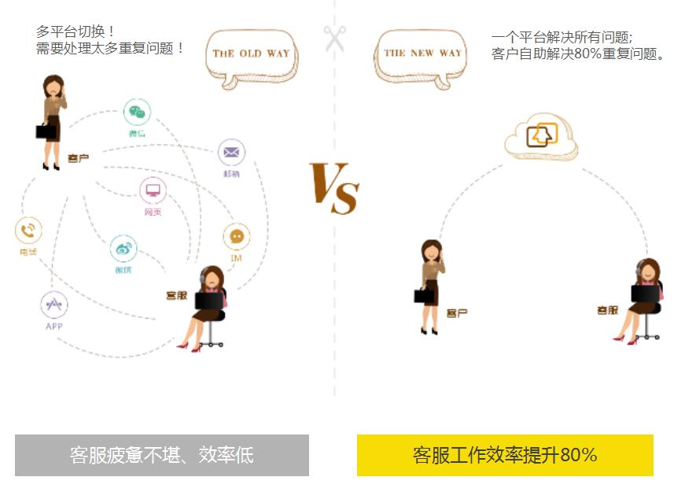
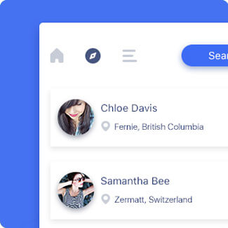
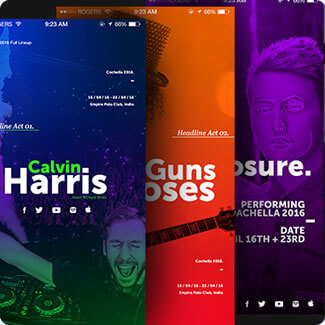
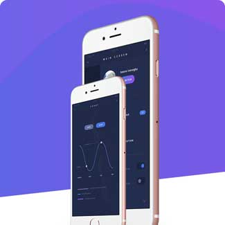
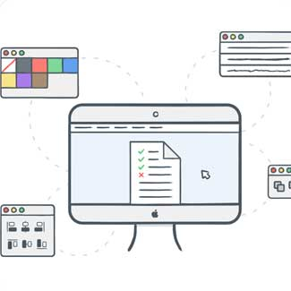
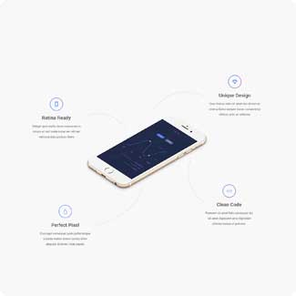

客服型呼叫中心
适用于想要统一排队处理企业多渠道（网站、APP、微信、电话、邮件）客户咨询的企业。
什么是客服型呼叫中心？
Scenes
众麦客服型呼叫中心融合了400电话客服、云呼叫中心、在线客服、微信客服、邮件客服，使得客服人员可以在一个界面中并发处理电话、web网站、移动网站、微信、APP、表单、邮件等所有来源的客户服务请求。
-
01
统一的多媒体渠道接入
-
02
避免客服人员多平台切换
-
03
工作效率显著提升
解决方案方案优势
Advantage
开通迅速，系统稳定；按座席数量收费，多种套餐资费更低！

比你想象中还多的功能
More features
-

提供呼入ivr语音播报欢迎词
-
座席可通过电话条操作：示闲、示忙、应答、挂断、呼出、保持/接回、咨询、转移、三方会议、转出等。
-

当来电分配到座席时，该座席的电脑屏幕上会自动弹出呼入来电的用户信息，如主叫号码、用户姓名、用户类别、服务历史记录等。坐席可在弹屏界面中新增或修改客户资料信息
-
坐席可以查询自己的工单记录和调听对应的电话录音，提供单条删除、批量删除、导出、修改等数据管理功能。
-
提供单条增加、批量导入、单条删除、批量删除、导出、修改等数据管理功能。

-

坐席可以查询自己的外呼话单明细和调听电话接通的录音。
-
班组长或质检可以监控对应监控组中的坐席状态，对通话中的坐席进行监听、强插、拦截等监控操作。
-

包含座席评分，数据记录，共享录音数据，便于坐席查询学习。
-

根据权限分别可以查询各自的统计报表：坐席呼叫情况及呼叫数、接通率/日报、周报、呼入呼出报表等